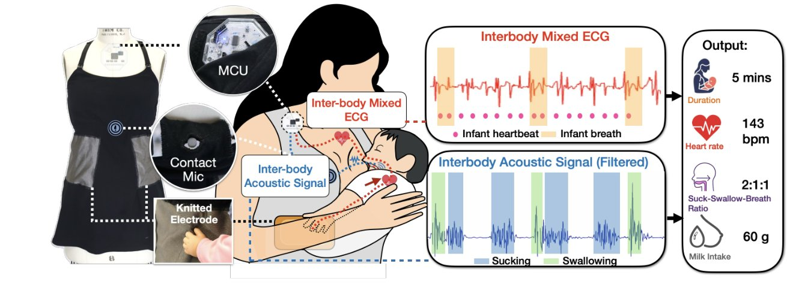
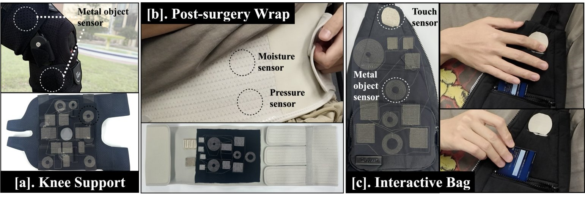

Hi, I'm Yanfeng.
I build soft wearable interfaces that sense, interact, and respond.
PhD Candidate in Computer Science at Florida State University, in the MakeX Lab, advised by Prof. Te-Yen Wu. My research explores multimodal ubiquitous computing through computational fabrics and wearable systems.
Selected Research

IMWUT 2026
Mammal
A caregiver-worn computational garment that monitors breastfeeding through inter-body sensing, with no sensors on the infant.
View project →
UIST 2026
Textro
A prototyping toolkit for solderless and chipless smart textile interfaces: design, embroider, glue, and test with no chips and no soldering.
View project →News
- Presented Textro (paper + live demo) at UIST 2026.
- Mammal accepted to IMWUT 2026.
- Serving as a reviewer for UIST 2026.
- Started as a Graduate Teaching Assistant in FSU Computer Science.
- Talk on Textro at the FSU CS Student Seminar.
- C.A.R.E exhibited at the ITAA 2025 Design Exhibition.
- Presented Mammal at the FSU CS Expo.